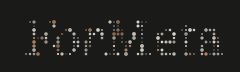
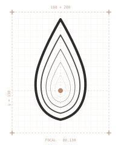

Tres elementos, una marca. La gota construida de puntos, el nombre construido de puntos, y la suma de ambos. Una sola gramática visual.
spacing 8, radio máximo 2.8, decay 38, núcleo terra r=4. Coherente con el logotipo (ambos construidos por puntos). Inspiración: descargar (1).jpg y Detailed 4K.jpg de src/inispiration/.
La marca ForMeta se compone de tres elementos que viven por separado o juntos. Cada uno tiene su uso. No se inventan combinaciones nuevas.
La gota construida por una rejilla de puntos cuya densidad converge en un núcleo terra. Representa el formitar — composición a partir de dato — y la inteligencia contenida. Se usa sola cuando ya hay contexto de marca (favicons, redes, watermarks, motion).
El nombre "ForMeta" construido a partir de puntos. La misma gramática que el símbolo: dato compuesto en forma. Se usa cuando hace falta nombrar sin acompañamiento gráfico, en cabeceras de cliente o documentación técnica.
La composición símbolo + logotipo. Forma canónica de la marca — la que aparece cuando ForMeta se presenta por primera vez. Web, propuesta de cliente, presentación, papelería, firma. Por defecto, esta es la opción.
"ForMeta" en trama de puntos. Tres variantes según fondo. El logotipo nunca se reproduce con tipografía: siempre desde SVG original.

logotipo.negative.svgLa composición canónica: símbolo a la izquierda, logotipo a la derecha. La altura de la gota iguala la altura del logotipo. Separación = ancho de la gota.
La gota construida por puntos. La halftone es la versión canónica con configuración final (spacing 8, maxR 2.8, decay 38, núcleo 4). La simple es para tamaños pequeños donde los puntos no se leen (≤ 24px). La layered queda como alternativa concéntrica para contextos específicos.

simbolo_v2_construccion.svgLos puntos se generan al cargar la página. Los defaults son los confirmados como canónicos. Si necesitas iterar para un contexto especial, ajusta y exporta — el archivo se descarga listo para guardar en assets/svg/.
Seis animaciones canónicas. Tres para el símbolo, dos para el logotipo, una para el isotipo. Todas en loop, curva cubic-bezier(0.16, 1, 0.3, 1) o ease-in-out. Duración 3.5–6s. Nunca rebotan ni hacen flash.
Onda concéntrica que se propaga desde el núcleo hacia fuera. Cada anillo de puntos pulsa con desfase de 80ms.
Los puntos se componen desde fuera hacia el núcleo, mantienen la forma, luego se desvanecen. La marca se construye y se borra cíclicamente.
Todos los puntos respiran al unísono — escala sutil 1.0 → 1.18 → 1.0. Sin onda, sin desfase. La marca como organismo único.
Revelado de izquierda a derecha vía clip-path. Pausa en el centro del loop, salida por la derecha.
Entrada vertical desde abajo con desvanecimiento. Sale hacia arriba. Más calmada que el wipe.
Latido permanente — opacidad y escala mínima. La marca presente pero no insistente.
Coreografía completa: primero entra la gota con escala + opacidad. Luego el nombre se revela en wipe. Cierre simétrico. La forma canónica de animar el isotipo.
Para piezas que combinan animación de símbolo + logotipo, sincronizar duraciones: 4s + 4s, o 3.5s + 7s. Nunca animaciones simultáneas con duraciones impares.
El símbolo vive en una retícula de 160 × 200. La silueta de la gota es implícita — no hay trazo de contorno; los puntos definen la forma por densidad. Punto focal en (80, 130) — tercio inferior.
Rejilla: hexagonal, spacing 8 con offset de medio paso en filas alternas. ~75 puntos. Radio de cada punto: max(0.4, 2.8 − d/38 × 2.8) donde d = distancia al foco.
Núcleo: círculo terra (radio 4) en el punto focal exacto. Es la única parte sólida del símbolo.
Zona de seguridad: margen igual al diámetro del núcleo (×4). En el isotipo, la separación símbolo–logotipo = ancho de la gota.
Tamaño mínimo: halftone 40px de altura · simple 16px · logotipo 80px de ancho · isotipo 120px de ancho. Por debajo de 40px, usar la variante simple.
App icon: se usa #drop-halftone-square — viewport 200×200 con la gota centrada (padding 30 horizontal, 12.5 vertical). Mantiene la composición cuadrada del tile.
Reglas estrictas. El sistema mantiene su forma — no se rota, no se rellena, no se distorsiona, no se simplifica fuera de las variantes definidas.
No rotar. La gota cae hacia abajo siempre.
No rellenar sólido. Los puntos son la marca.
No deformar las proporciones.
No cambiar el color fuera de paleta.
No sobre fondo con poco contraste.
No añadir sombras, bordes ni efectos.
No mover el núcleo del foco (80, 130).
No añadir contorno alrededor de los puntos.
Icono para aplicaciones móviles y favicons. Cinco variantes de fondo + favicon. El símbolo se renderiza usando #drop-halftone-square — viewport cuadrado 200×200 con la gota centrada (padding 30 horizontal, 12.5 vertical). Esto mantiene la composición visual cuadrada del tile, sin que el símbolo quede letterboxed verticalmente. Esquinas con radio iOS estándar (22.37%, "squircle continuous"). Para favicon ≤ 32px se usa la versión simple.
Imagen Open Graph para redes sociales y previews de link. Formato 1200×630. Modo oscuro por defecto — la marca rinde mejor cuando se comparte sobre feeds claros.
og.default.png · 1200×630
Todos los archivos vectoriales en sus variantes. Para usar en cliente, web, redes y aplicaciones. Si el botón de pack no funciona, descarga los archivos individualmente desde la lista de abajo. Para descargar los halftone con la configuración actual, usa los botones de exportar en la sección Símbolo.
{kind=link}
{kind=link}
{kind=link}
{kind=link}
{kind=link}
{kind=link}
{kind=link}
{kind=link}
{kind=link}
{kind=link}
{kind=link}
{kind=link}
{kind=link}
{kind=link}
{kind=link}